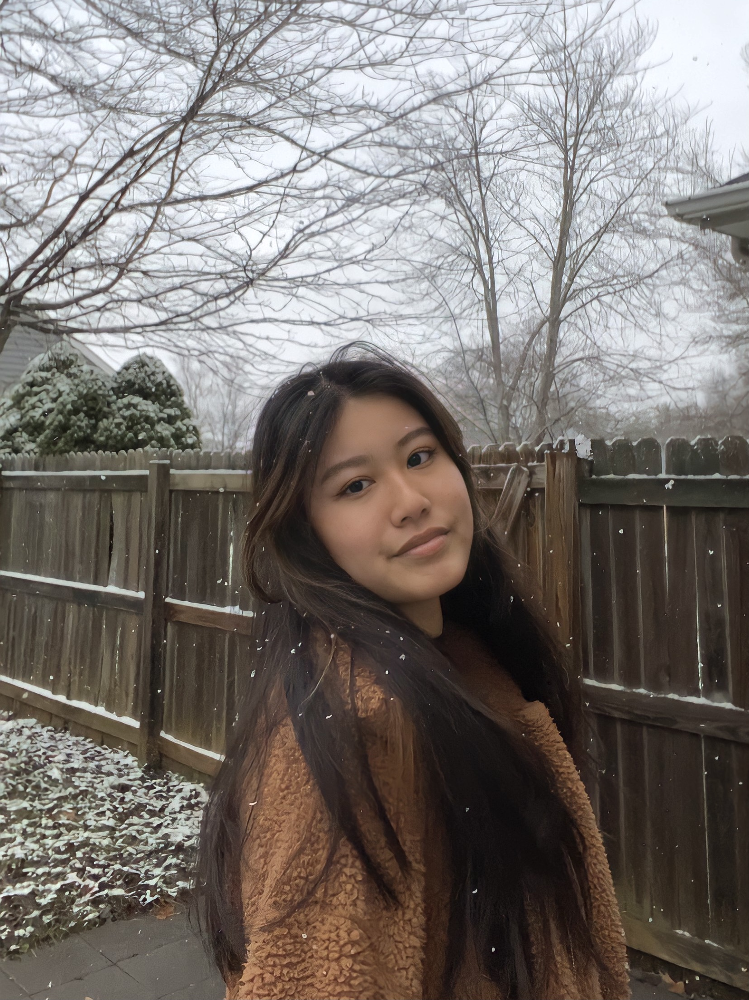

👋 I'm a current FLI first year student at Barnard College of Columbia University pursuing a B.A in Cognitive Science and minor in Computer Science. I'm an aspiring Product Designer passionate about ethical and accessible Human-Computer Interaction, designing for social good, tech ethics surrounding AI/algorithm bias, and the intersection of public policy and tech.
Previously, I worked as a Political Fellow for Qasim Rashid's 28th Virginia state Senate race. I’ve formerly organized and worked on multiple youth-led organizations. I’m also a freelance writer and photographer passionate about political advocacy and sharing the stories of young women of color and our experiences in this world.
Here's a link to my portfolio page!
☁️ Over the holidays, I worked on my first UI/UX Design case study - "Netflix Wrapped", similar to the concept of "Spotify Wrapped" with the main goal to visualize the yearly review data that provide a story of the hours you spent with the company, bridging the gap between the company and consumer trust.